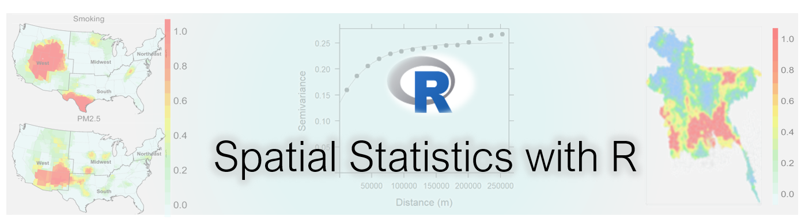

Spatial Statistics
Spatial Autocorrelation
Geographically Weighted Models
Geographically Weighted Summary statistics
Geographically Weighted Principal Components Analysis
Geographically Weighted Regression Analysis
Deterministic Methods for Spatial Interpolation
Geostatistical Methods for Spatial Interpolation
Semivariogram Modeling
Kriging
Ordinary Kriging
Universal Kriging
Co-kriging
Regression Kriging
Generalized Linear Model
Random Forest
Meta-Ensemble Machine Learning (stack-generalization)
Indicator Kriging
Assessing the Quality of Spatial Predictions
Cross-validation
Validation with an Independent Dataset
Conditional Simulation for Spatial Uncertainty